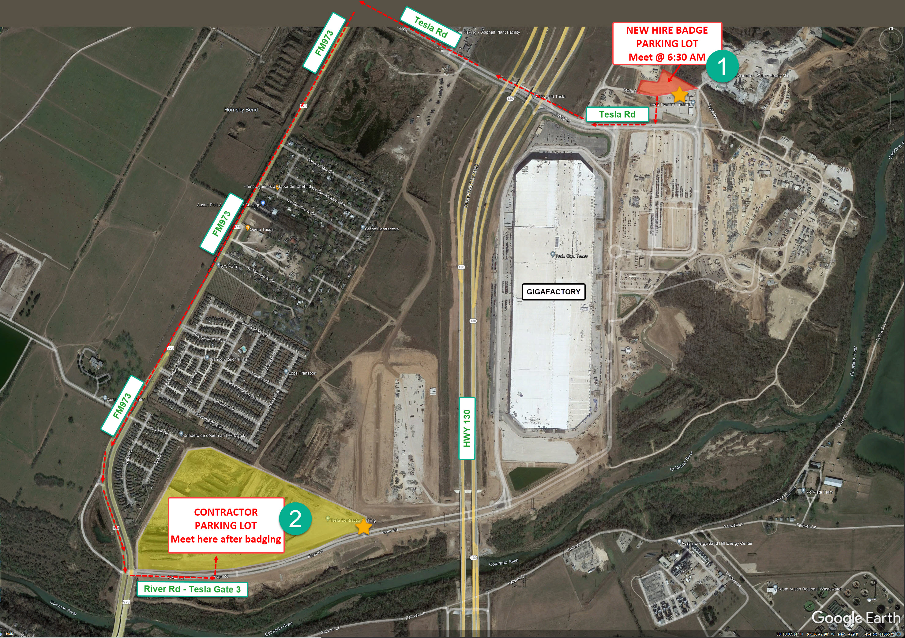

Employer:
Pinnacle Precision Services, Inc.
General Manager:
Daniel Ivey
225-202-7925
divey@pinnacleprecision.com
Administrator:
Barry Ivey
225-773-6371
barry@pinnacleprecision.com
Manager of Operations:
Dwaine Hodges
225-588-3640
dhodges@pinnacleprecision.com
Project Superintendent:
John Merkel
281-907-2533
jmerkel@pinnacleprecision.com
Job Location:
Tesla Gigafactory (Austin)
1 Tesla Rd, Austin, TX 78725
Shift Times:
5:00 AM - 3:30 PM, Monday thru Saturday
All new hires are required to undergo a drug test. You will receive a text with the schedule, location information, a confirmation number, and a QR code for your test.
CareNow - Riverside DrUPDATE: We will meet at the badging office at 6:30 AM on Monday, November 27, 2023.
Badging is done at the Tesla Visitor Check-in Trailers located at:
New hire badging locationUPDATE: We will meet at the Contractor Parking Lot after badging
Refer to the map below for contractor parking locations at Tesla Gigafactory.
Contractor Parking LotUPDATE
View the map for new hires at the Tesla Pinnacle Project:
